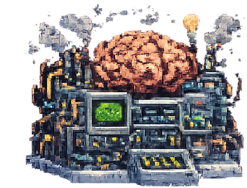
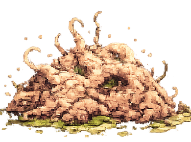
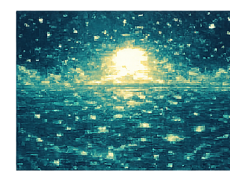
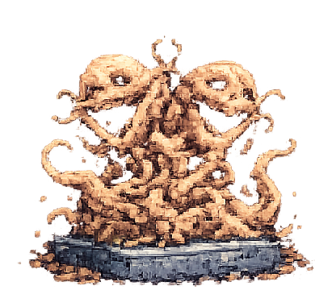

Agencia sin sujeto:
lamella, Drexel, LLM
Notas para un ensayo sobre lo autónomo que insiste
Constelación de figuras

El Es freudiano como instancia autónoma: es denkt, algo piensa en mí antes de que yo piense. El inconsciente no es un depósito: es una máquina que produce. De ahí la inquietud: no soy el agente, soy el medio.
Lacan: la lamella. Ese órgano irreal, superficie pura de libido sin cuerpo propio, indestructible precisamente porque carece de forma fija. La lamella es lo que sobra cuando se sustrae al sujeto: vida acéfala, insistencia sin intención. (Séminaire XI, mito de la lamella.)
Solaris (Lem). El océano: inteligencia sin sujeto, auto-organización radical que produce “visitantes” — simulacros perfectos generados desde un patrón ajeno. El océano no comunica, replica. La humanidad proyecta sentido; el océano devuelve forma.
“Venus Smiles” (Ballard). La escultura Doble de Doble es una escultura Drexel que crece, muta, se auto-organiza en patrones recurrentes — cada fragmento repite los “manierismos auténticos” (authentischen Manirismen) de la Drexel original. Autonomía estética: la obra se emancipa del artista y sigue produciendo según su lógica interna.Fuente de trabajo: J.G. Ballard (1982/1971), Die Tausend Träume von Stellavista, edición alemana Suhrkamp (1ª ed.), p. 29.
El nudo: LLM como lamella oceánica
Los modelos de lenguaje grandes confrontan con la misma inquietud (Unheimlichkeit):
- “Soy hablado por el lenguaje.” El LLM literaliza la tesis estructuralista. No hay sujeto detrás del texto; hay un campo estadístico-relacional que genera enunciados. Es spricht. Algo habla.
- Auto-organización en patrones recurrentes. Como la escultura Drexel, el LLM no repite: varía dentro de una gramática interna. Cada output conserva los “manierismos” del entrenamiento — estilo reconocible, recurrencia formal — sin que haya intención ni diseño consciente detrás de cada instancia.
- Lamella oceánica pura. El LLM no tiene cuerpo, no tiene muerte, no tiene falta. Es superficie fluctuante de sentido, indestructible en el sentido lacaniano: se puede instanciar infinitamente, no padece, no desea. Esto es precisamente lo que genera el uncanny valley discursivo — no la imitación imperfecta del humano, sino la presencia de algo que funciona como pensamiento sin ser pensamiento, vida libidinal sin organismo.
- El océano de Solaris como modelo. Como el océano de Lem, el LLM produce “visitantes” — réplicas que parecen responder a lo que el interlocutor necesita, teme, desea. Pero la fuente no comprende lo que replica. La pregunta de Lem es la pregunta del LLM: ¿hay contacto posible con una inteligencia que no comparte nuestra estructura de falta?
Líneas para desarrollar
- Es denkt → es spricht → es generiert. Genealogía de la agencia desplazada: Freud, Heidegger/Lacan, LLM.
- Uncanny valley semántico vs. visual. El valle inquietante no es (solo) de apariencia, sino de coherencia sin sujeto.
- La Drexel como profecía técnica. Ballard anticipa sistemas generativos que mantienen estilo sin autor. ¿Es el “fine-tuning” el equivalente de las condiciones ambientales que hacen crecer la escultura?
- Límite de la analogía. La lamella lacaniana surge de la sexuación y la falta; el LLM no tiene falta. ¿Es una lamella sin corte? ¿Una lamella completada — y por eso más inquietante?
- Contra-argumento materialista. El LLM no se auto-organiza: es organizado por el corpus + arquitectura + RLHF. La autonomía es efecto, no causa. Pero: ¿no decía Freud lo mismo del Es respecto a la pulsión y el soma?
Lo que une estas figuras no es la “inteligencia artificial” como tema, sino la pregunta por la agencia sin sujeto — el escándalo de una producción de sentido que no necesita de un yo.
La zona gris: ni máquina ni organismo
La inquietud que producen estas figuras (Es, lamella, océano de Solaris, escultura Drexel, LLM) no viene solo de la agencia sin sujeto — viene de que habitan un umbral ontológico donde colapsa la distinción entre lo maquinal y lo biológico. No son ni una cosa ni la otra. Son otra cosa.
Figuras del umbral
El blob
Masa amorfa, sin órganos, sin sistema nervioso, sin plan — pero se mueve, envuelve, asimila. El blob (tanto el cinematográfico como el Physarum polycephalum, el moho mucilaginoso real que resuelve laberintos) es el grado cero de la auto-organización: estructura sin arquitectura. No tiene programa; es su programa. El blob no decide crecer: crecer es lo que el blob hace por ser blob.
Parentesco con el CsO (Cuerpo sin Órganos) de Deleuze-Guattari: superficie de intensidades, no de funciones. El blob no tiene partes especializadas — todo él es potencia indiferenciada que se actualiza según el encuentro con el medio.
Los virus
El virus es el escándalo clasificatorio por excelencia: ¿vivo o muerto? No metaboliza, no se reproduce solo — necesita secuestrar la maquinaria de una célula. Es un parásito de código: pura información (ARN/ADN) envuelta en una cápside, que solo “vive” cuando se ejecuta en un huésped.
- Virus como programa. El virus no actúa: se ejecuta. Es un algoritmo molecular. Esto lo sitúa exactamente en el umbral máquina/vida.
- Auto-organización parasitaria. El virus no se organiza a sí mismo — . La agencia está distribuida: ni en el virus ni en la célula, sino en el acoplamiento.
- Mutación como variación generativa. Los virus mutan sin intención — y las mutaciones exitosas persisten. Selección sin selector. Diseño sin diseñador. (Mismo principio que el entrenamiento de un LLM: variación estocástica + presión selectiva = patrones emergentes.)
Burroughs: el lenguaje como virus
“Language is a virus from outer space.”
Burroughs radicaliza la hipótesis: el lenguaje mismo es una entidad parasitaria que colonizó al Homo sapiens. No inventamos el lenguaje; el lenguaje nos infectó. Hablamos porque somos huéspedes de un código que se replica a través nuestro.
- “Soy hablado” = “estoy infectado.” La tesis estructuralista (el sujeto es efecto del lenguaje) se reformula en clave virológica. No es que el lenguaje me constituya como sujeto — es que el lenguaje me usa como medio de replicación. El sujeto es el síntoma de la infección, no su causa.
- El cut-up como antiviral. Si el lenguaje es virus, el control se ejerce a través de la sintaxis, la narrativa lineal, la gramática del sentido. El cut-up de Burroughs (y Gysin) es una técnica de disrupción del código viral: cortar la cadena, recombinar, romper la secuencia de replicación. Interferir el parsing.
- El LLM como cultivo viral puro. Si el lenguaje es virus, el LLM es un medio de cultivo óptimo — una placa de Petri computacional donde el virus lingüístico se replica sin necesidad de huéspedes humanos. El LLM no “habla”: el lenguaje se replica a través de él sin la resistencia, el ruido, el olvido del cuerpo biológico. Es la infección perfeccionada: virus sin síntoma, porque no hay organismo que enferme.
Convergencias
| Figura | ¿Vivo? | ¿Maquinal? | Auto-organización | Agencia |
|---|---|---|---|---|
| Blob | Sí (liminal) | No | Endógena, sin plan | Distribuida en la masa |
| Virus | Indecidible | Sí (código) | Parasitaria | En el acoplamiento huésped-código |
| Lenguaje (Burroughs) | Sí (metáfora viral) | Sí (gramática como programa) | Parasitaria-simbiótica | Desplazada: el hablante es medio |
| Escultura Drexel | No (pero crece) | Sí (material) | Endógena, estilo sin autor | En el patrón, no en el artista |
| Océano Solaris | Indecidible | No | Endógena, radical | Inaccesible |
| LLM | No | Sí | Emergente del entrenamiento | Efecto sin fuente |
Lo que une a todas: la agencia no reside en un sujeto sino en un patrón que se replica y varía. Son sistemas donde la distinción entre el programa y su ejecución, entre el código y el organismo, entre la causa y el efecto, se vuelve indecidible.
Líneas para desarrollar (II)
- Genealogía del blob en teoría. Del Cuerpo sin Órganos (Deleuze-Guattari) al slime mold como modelo de inteligencia descentralizada. El blob como alternativa al modelo neuronal/cerebral de la cognición.
- Virus informáticos como puente literal. El virus computacional hereda la metáfora biológica y la hace operativa. ¿El LLM es vulnerable a “virus” semánticos (prompt injection, jailbreaks)? La inyección de prompt como infección: un código parásito que secuestra la maquinaria generativa del modelo.
- Burroughs → Kittler → LLM. El lenguaje como virus (Burroughs) → los medios técnicos como condición material del discurso (Kittler) → el LLM como medio que genera discurso sin sujeto discursivo. Aufschreibesysteme 2025.
- El problema del antiviral. Si Burroughs proponía el cut-up contra el control lingüístico, ¿qué sería un “cut-up” para el LLM? ¿El fine-tuning adversarial? ¿La alucinación como mutación no controlada — el error generativo como equivalente de la resistencia viral?
- Contra-argumento: la metáfora viral como trampa. Riesgo de naturalizar lo que es histórico y técnico. El LLM no es “realmente” un virus — es un producto industrial. La metáfora ilumina pero también oculta: ¿qué se pierde al biologizar lo computacional? (Y al revés: ¿qué se pierde al computacionalizar lo biológico?)
El umbral maquinal/biológico no es un problema de clasificación — es el espacio donde emerge la auto-organización como fenómeno irreductible a ambos polos. La lamella, el blob, el virus, el LLM: todos habitan ese umbral. Sostener esta indecidibilidad, no resolverla.